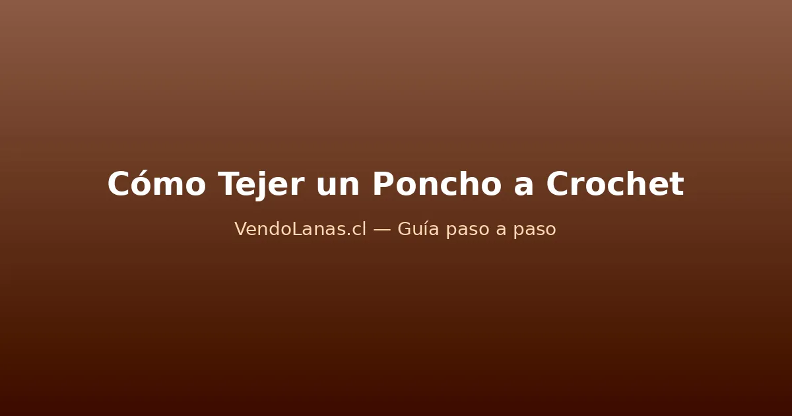

Proyectos de crochet
Cómo tejer un poncho a crochet paso a paso
El poncho a crochet es el proyecto perfecto para abrigarte sin complicaciones: no lleva mangas, no necesita ajuste de tallas preciso y se arma con dos rectángulos que se cosen formando una L. En esta guía tienes la tabla de medidas, el paso a paso completo, cuántos ovillos comprar y qué lana elegir.

Materiales para tejer tu poncho
Un poncho a crochet es uno de los proyectos más gratificantes para quien ya superó los accesorios: se teje rápido, abriga mucho y no lleva ajuste de tallas complicado. Necesitas:
- Entre 5 y 8 ovillos de 100 g, según el largo que quieras y el grosor de la lana. Más abajo tienes la tabla exacta.
- Un ganchillo acorde al hilo: 6 a 8 mm para lanas gruesas, 5 a 6 mm para semi gruesas. Si tienes dudas, revisa nuestra guía de qué aguja o ganchillo usar para tejer.
- Aguja lanera, tijeras y cinta métrica.
El poncho pide lanas con cuerpo y algo de peso, porque el propio peso de la prenda es lo que le da esa caída envolvente. Estas son las mejores opciones del catálogo:
- Lana gruesa jaspeada, para un poncho con textura: Lana Twister Revesderecho Azul Marino o Lana Twister Revesderecho Camel, de 85% acrílico y 15% viscosa, con 150 m por ovillo y efecto jaspeado que disimula cualquier irregularidad. Mira toda la línea en lana Revesderecho.
- Lana semi gruesa suave: Petunia Fogata Llama o Petunia Fogata Bosque, de 75% acrílico y 25% nylon, con 140 m por ovillo. Toda la línea está en lana Petunia.
- Lana de grosor medio, versátil: Lana Ukryl 24/7 Beige o Lana Ukryl 24/7 Gris, con 150 m por ovillo y 22 colores para elegir.
- Lana matizada con brillo: Lana Secret Revesderecho Atardecer o Lana Secret Revesderecho Salvia, con 100 m de lana gruesa que cambia de color sola.
Cómo se construye un poncho a crochet
El secreto que lo vuelve un proyecto tan sencillo: un poncho básico son dos rectángulos idénticos. Se tejen por separado y se cosen formando una L invertida, donde la unión deja la abertura del cuello arriba y las puntas caen en diagonal.
No necesitas hacer aumentos, disminuciones, sisas ni moldes de papel. Si ya has tejido una manta a crochet o un chaleco a crochet, el poncho te resultará incluso más simple: los rectángulos son más cortos y no llevan uniones laterales.
Tabla de medidas por talla
La medida clave es el largo del poncho: la distancia desde la base del cuello hasta el punto más bajo, medida en diagonal. En un poncho de dos rectángulos, el ancho de cada rectángulo es igual al largo del brazo más el ancho del hombro.
| Talla | Ancho del rectángulo | Largo del rectángulo | Caída total del poncho |
|---|---|---|---|
| S | 55 cm | 65 cm | 70 cm aprox. |
| M | 60 cm | 70 cm | 75 cm aprox. |
| L | 65 cm | 75 cm | 80 cm aprox. |
| XL | 70 cm | 80 cm | 85 cm aprox. |
Para un poncho más corto tipo capelet, reduce el largo a 45-55 cm. Para uno tipo ruana (abierto adelante), teje un rectángulo el doble de largo y corta o deja sin coser la parte delantera.
La muestra de tensión
Es el mismo paso que en cualquier prenda: teje un cuadrado de 12 × 12 cm con tu lana y ganchillo, mide al centro cuántos puntos entran en 10 cm y multiplica por el ancho que necesitas. Si nunca has hecho una muestra, en la guía de cuánta lana necesito para tejer está el método completo.
| Dato | Valor |
|---|---|
| Puntos en 10 cm | 12 (punto alto, ganchillo 7 mm) |
| Ancho del rectángulo | 60 cm |
| Cálculo | 12 ÷ 10 × 60 = 72 |
| Cadena base | 72 puntos + 3 cadenas de altura |
Paso 1: teje los dos rectángulos
Empieza con la cadena base calculada y teje recto en punto alto, sin aumentar ni disminuir, hasta alcanzar el largo de tu talla.
- Haz la cadena base y teje la primera vuelta de puntos altos.
- Sigue vuelta tras vuelta, contando los puntos al final de cada vuelta para no perder ni ganar.
- Al llegar al largo indicado, corta la hebra dejando unos 60 cm para la costura.
- Teje el segundo rectángulo exactamente igual: mismo número de puntos, mismo número de vueltas.
Paso 2: une las piezas
Aquí está la «magia» del poncho de dos rectángulos:
- Extiende el rectángulo A horizontal sobre la mesa.
- Coloca el rectángulo B vertical encima, alineando su borde superior izquierdo contra el borde derecho del A, formando una L.
- Cose (con aguja lanera o con punto raso) el borde superior de B contra el lateral derecho de A, desde la esquina hacia el centro, dejando libre la abertura del cuello (unos 25 a 30 cm sin coser).
- Da vuelta la pieza: la costura queda oculta y el cuello se forma naturalmente.
Pruébatelo antes de rematar. Si el cuello queda muy ancho, cose unos centímetros más. Si queda muy justo, descose un poco.
Paso 3: borde del cuello y terminaciones
Los bordes dan la terminación profesional:
- Cuello: levanta puntos alrededor de toda la abertura y teje 3 a 5 vueltas de punto bajo. En las esquinas, haz 2 disminuciones por vuelta para que el cuello no se abra.
- Borde inferior: teje 2 vueltas de punto bajo por todo el contorno exterior del poncho. En las esquinas de las puntas delanteras y traseras, haz 3 puntos en el mismo lugar para que no se enrollen.
- Flecos opcionales: corta hebras de 30 cm, dóblalas por la mitad y anúdalas con un nudo de alondra cada 2 o 3 puntos por el borde inferior.
Al terminar, remata las hebras y bloquea la prenda extendida sobre una toalla húmeda. Para el cuidado posterior, sigue nuestra guía de cómo lavar y cuidar la lana.
Cuántos ovillos necesitas según la lana
Las cantidades son para un poncho talla M en punto alto, con un margen del 15% ya incluido. En punto bajo súmale un 30% más.
| Lana | Grosor | Metros por ovillo | Talla S | Talla M | Talla L | Talla XL |
|---|---|---|---|---|---|---|
| Lana Twister Revesderecho | Grueso | 150 m | 5 | 6 | 7 | 8 |
| Petunia Fogata | Semi grueso | 140 m | 5 | 7 | 7 | 8 |
| Lana Secret Revesderecho | Grueso | 100 m | 7 | 8 | 9 | 10 |
| Ukryl 24/7 | Medio | 150 m | 6 | 7 | 7 | 8 |
| Lana chenille | Grueso | 100 m | 7 | 8 | 9 | 10 |
Con lanas gruesas como Lana Twister Revesderecho Rojo el poncho avanza mucho más rápido que con hilos finos, y cada metro cubre más superficie. Si quieres afinar tu cálculo, usa la fórmula de la guía de cuánta lana necesito para tejer.
Variaciones del poncho básico
- Poncho con capucha: al terminar el cuello, levanta puntos en la mitad trasera y teje un rectángulo de 30 × 60 cm; dóblalo por la mitad y cose el borde superior.
- Poncho de granny squares: en vez de rectángulos, teje cuadrados y únelos. Aprende la base en la guía del granny square.
- Ruana abierta: teje un solo rectángulo del doble de largo, dóblalo por la mitad y cose solo los hombros, dejando el frente abierto.
- Poncho de bebé o niño: reduce las medidas proporcionalmente. Combínalo con los zapatitos de bebé para un conjunto.
- Con cuello alto: teje 10 a 15 vueltas de punto bajo alrededor del cuello en vez de 3 a 5, creando un cuello tipo tortuga que se dobla.
Errores comunes al tejer un poncho
- Rectángulos de distinto tamaño. Cuenta las vueltas y los puntos de cada uno. Medir con cinta funciona, pero contar es más preciso.
- Cuello que queda muy abierto. Pasa cuando la zona sin coser es demasiado larga. Pruébatelo antes de rematar y ajusta la costura.
- Puntas que se enrollan. El borde inferior necesita al menos 2 vueltas de punto bajo y puntos extra en las esquinas.
- Elegir lana muy fina. Un poncho en hilo fino puede quedar hermoso, pero tarda mucho más y no abriga igual. Para tu primer poncho, empieza con lana gruesa.
- No bloquear. Como en todo proyecto, el bloqueo empareja los puntos y deja la prenda con la caída correcta.